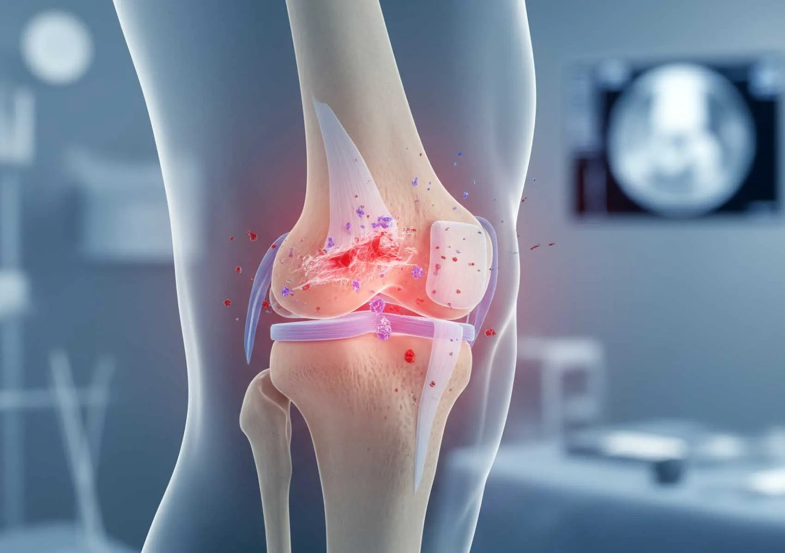
DİZ
Ortopedi ve Travmatoloji
Doç. Dr. Mesut Karıksız
Klinik deneyim ve akademik çalışmalarıyla ortopedi ve travmatoloji alanında.
İletişim bilgileri Ortopedi ve Travmatoloji
Ortopedi ve Travmatoloji
“Ortopedi ve travmatoloji alanındaki klinik deneyimimi bilimsel çalışmalarla destekliyorum.”
Doç. Dr. Mesut Karıksız, ortopedi ve travmatoloji uzmanıdır. Mesleki ve akademik çalışmaları; alt ekstremite deformiteleri, uzatma ve eksternal fiksatör uygulamaları başta olmak üzere ortopedinin farklı alanlarını kapsamaktadır.
Tıp doktoru · Ortopedi ve Travmatoloji uzmanı · Doçent doktor
Ortopedi ve travmatoloji
Tedavi alanları
Spor cerrahisi
Diz
 DİZ
DİZMenisküs yırtıkları
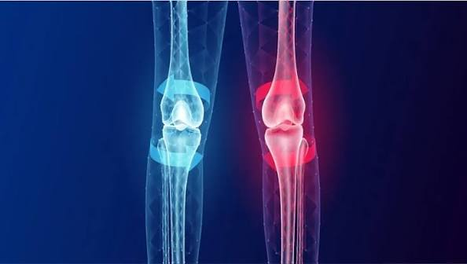
DİZKıkırdak yaralanmaları
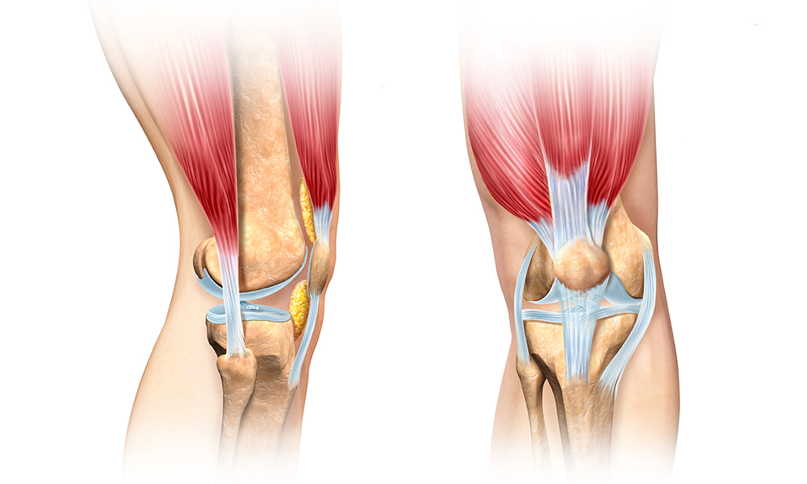
DİZDiz kapağı çıkığı
Omuz
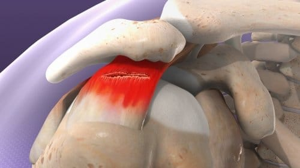
OMUZKas-tendon yırtıkları
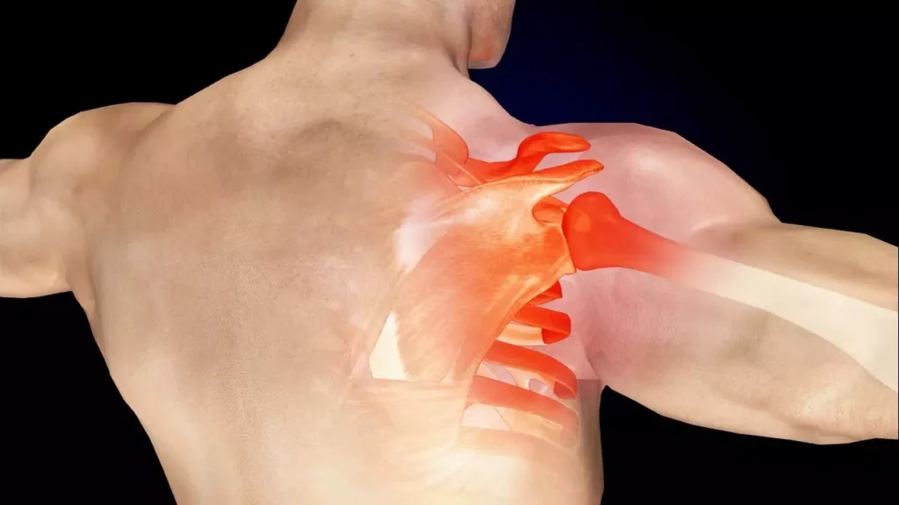
OMUZOmuz çıkıkları
Kalça
Kalça sıkışma sendromu (FAI)
Kalça artroskopisi
Bu sorunların değerlendirilmesi; muayene ve gerekli tetkiklerle kişiye özel yapılır. Uygun tedavi seçenekleri hekim görüşmesinde ele alınır.
Protez cerrahisi
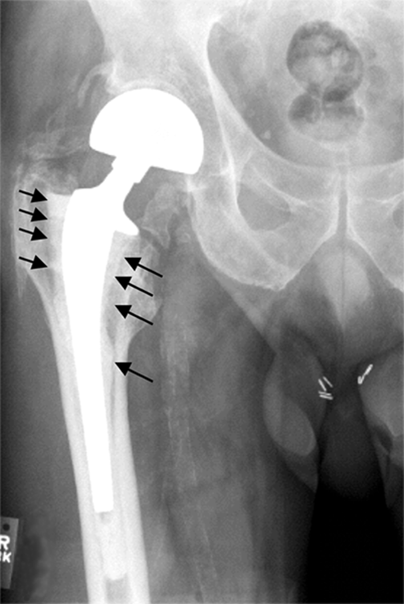
01Revizyon cerrahisi
 02
02Diz kireçlenmesi
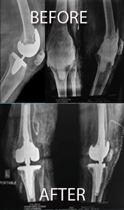
03Diz protezi
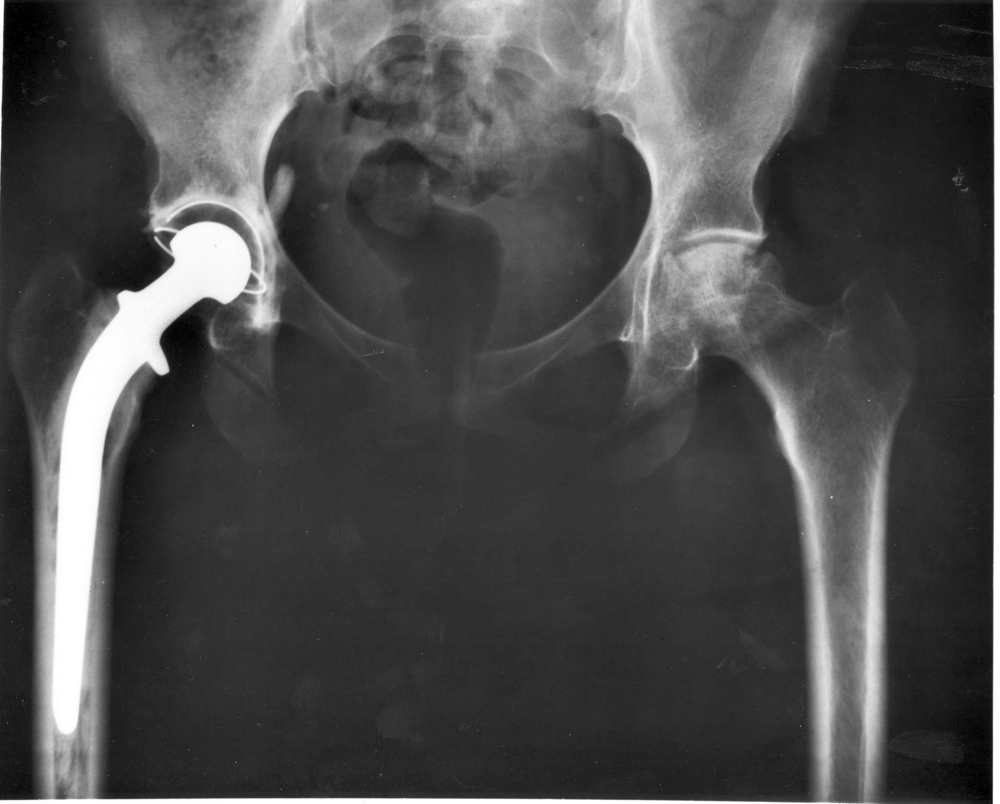
04Kalça protezi
 05
05Kalça kireçlenmesi
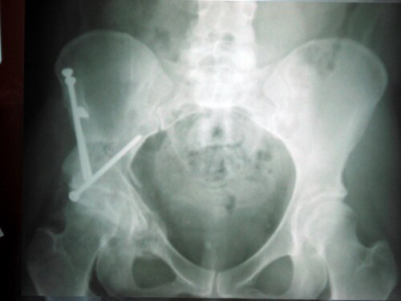
06Ganz ameliyatı
Kök hücre tedavileri
Kök hücre uygulamalarının uygunluğu, hastanın klinik durumu ve bilimsel kanıtlar doğrultusunda hekim tarafından değerlendirilir.
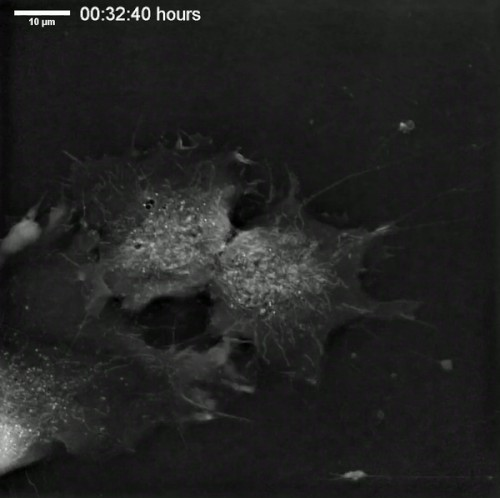
TEDAVİ SEÇENEKLERİKişiye özel tıbbi değerlendirme
Her yöntem her hasta için uygun olmayabilir. Tanı ve tedavi planı muayene sonrasında belirlenir.
Endoskopik (kapalı) omurga cerrahisi
Endoskopik (kapalı) bel fıtığı ameliyatı
Endoskopik (kapalı) dar kanal ameliyatı
Endoskopik (kapalı) bel kayması ameliyatı
Transforaminal enjeksiyonlar (nokta atışı)
Kaudal enjeksiyonlar
Radyofrekans faset ablasyonu
Boy uzatma ve deformite cerrahisi
Boy uzatma
Konjenital tibia psödoartrozu
Hemimeli
Osteomiyelit (kemik enfeksiyonu)
Akondroplazi (cücelik)
Bacak eğrilikleri
Ultrason eşliğinde enjeksiyonlar
Ultrason altında enjeksiyon uygulamaları
Çocuk ortopedisi
 ÇOCUK ORTOPEDİSİ
ÇOCUK ORTOPEDİSİKalça çıkığı
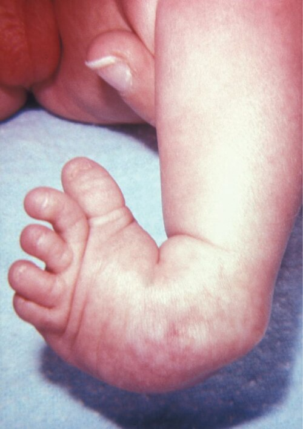
ÇOCUK ORTOPEDİSİÇarpık ayak (PEV)
Serebral palsi
 ORTOPEDİ
ORTOPEDİKalça artroskopisi
Bu başlıklar genel bilgilendirme amaçlıdır. Tanı ve tedavi seçenekleri hekim muayenesiyle kişiye özel belirlenir.
Klinik görseller
Öncesi / Sonrası
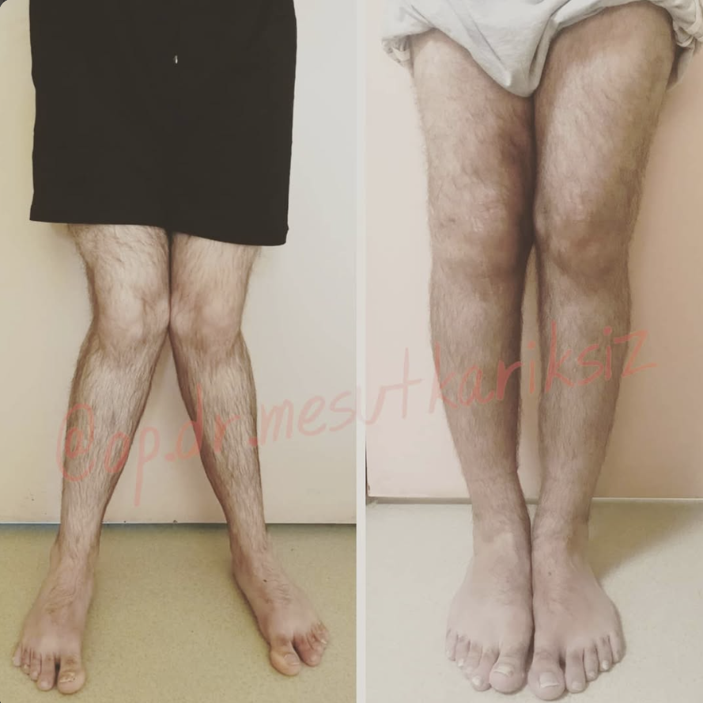
Alt ekstremite görünümü
ÖncesiSonrası

Uzuv uzunluğu ve diz görünümü
ÖncesiSonrası
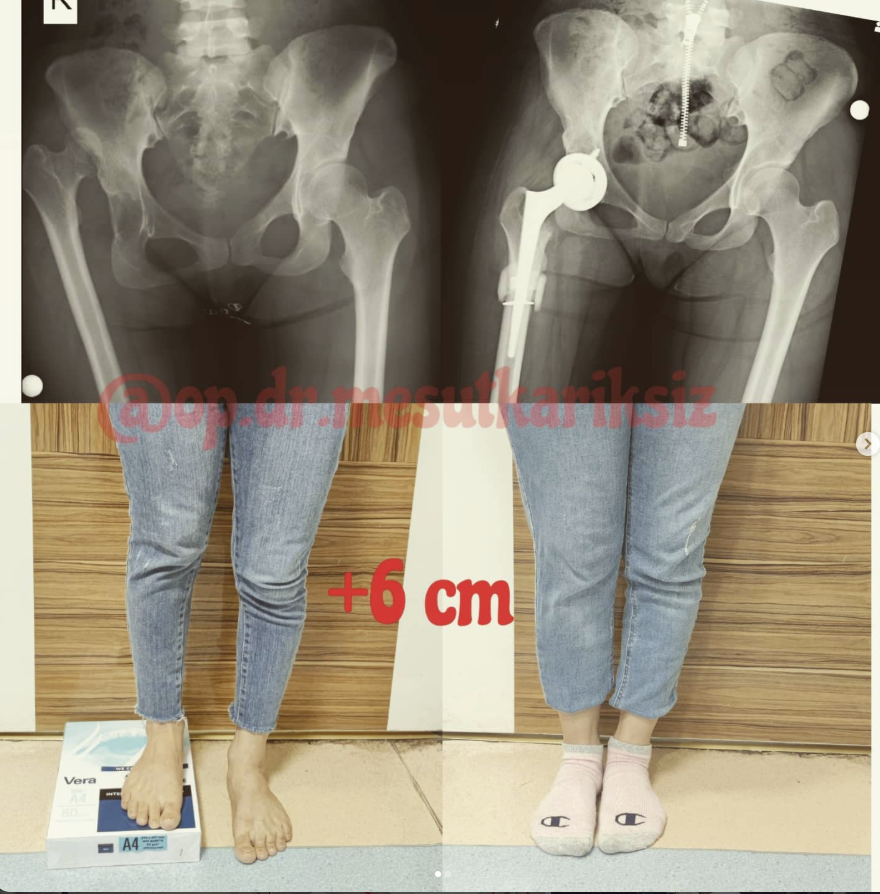
Röntgen ve klinik görünüm
ÖncesiSonrası

Bacak dizilimi
ÖncesiSonrası

Ayak görünümü ve röntgen
ÖncesiSonrası
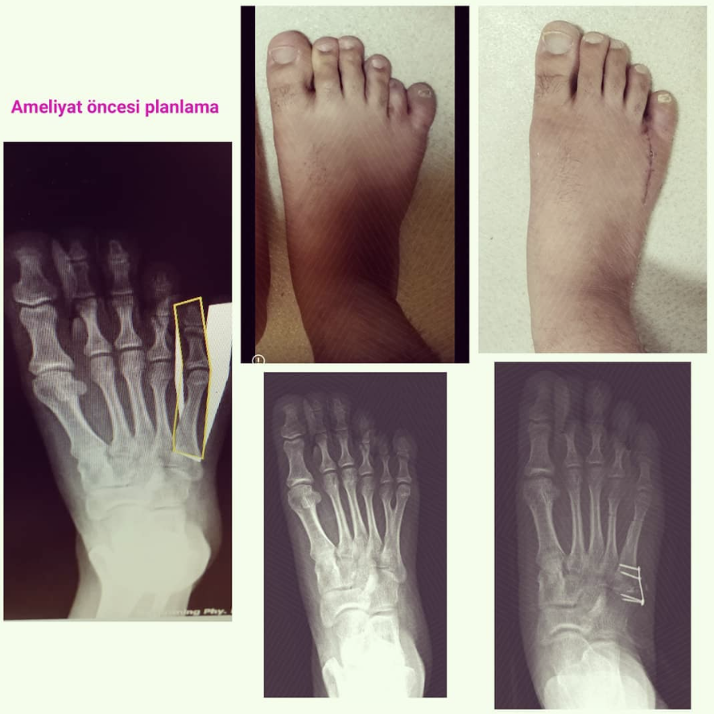
Klinik görünüm
ÖncesiSonrası
Görseller bilgilendirme amaçlıdır. Her hastanın değerlendirme ve tedavi süreci kişiye özeldir.
Mesleki ilgi alanları
Çalışma alanları
Özgeçmişinde yer alan klinik ve akademik çalışmalar doğrultusunda öne çıkan başlıklar.
Alt ekstremite deformiteleri
Deformite değerlendirmesi ve düzeltme yöntemleri üzerine çalışmalar.
Uzuv uzatma ve eksternal fiksatör
Eksternal fiksatörler, uzatma uygulamaları ve bilgisayar destekli planlama.
Ortopedik travma
Kırık tedavisi, travma sonrası komplikasyonlar ve kemik iyileşmesi.
Omuz ve diz
Omuz instabilitesi, artroskopik cerrahi ve spor yaralanmaları üzerine akademik çalışmalar.
El ve üst ekstremite
El, el bileği ve üst ekstremite ortopedisine ilişkin bilimsel çalışmalar.
Çocuk ortopedisi
Çocuklarda ortopedik sorunlar ve alçı tedavisi üzerine yayınlar.
Eğitim ve mesleki geçmiş
Deneyim
Tıp eğitimi, uzmanlık ve görev bilgileri özgeçmişinde yer aldığı şekildedir.
TOTBİD
TOTDER
ASAMI
TÜSYAD
Pediatrik Ortopedi
Endoskopik Omurga Cerrahisi Derneği
Tıp Fakültesi
Dicle Üniversitesi
Araştırma görevlisi
Tekirdağ Namık Kemal Üniversitesi, Ortopedi ve Travmatoloji Anabilim Dalı
Tıpta uzmanlık
Tekirdağ Namık Kemal Üniversitesi, Ortopedi ve Travmatoloji
Ortopedi ve Travmatoloji uzmanı
Gazi Yaşargil Eğitim ve Araştırma Hastanesi
Ortopedi ve Travmatoloji uzmanı
Özel Sultan Hastanesi
Ortopedi ve Travmatoloji uzmanı
Başakşehir Çam ve Sakura Şehir Hastanesi
Bilimsel çalışmalar
Seçilmiş yayınlar
Özgeçmişte yer alan hakemli dergi makalelerinden seçilmiş örnekler.
Treatment and clinical outcomes in lower extremity necrotizing soft tissue infection
European Journal of Trauma and Emergency Surgery
Effect of coloring the long-arm cast on depression, anxiety, and quality of life in children treated with a cast for forearm fractures
Annals of Clinical and Analytical Medicine
Antibacterial evaluation of antibiotic-coated titanium and stainless steel implants in orthopaedic application: a dip-coating approach
Journal of Orthopaedic Surgery and Research
Hook assisted reduction in cephalomedullary nailing without traction table
Acta Orthopaedica Brasileira
Mid-term follow-up results of gradual capitate lengthening for the treatment of stage IIIA Kienbock's disease
Journal of Orthopaedic Surgery
Bilgilendirme yazıları
Blog yönetimi →
Blog
Yazılar yükleniyor…
İletişim
Bilgi ve iletişim
Görev yeri
Başakşehir Çam ve Sakura Şehir Hastanesi
Ortopedi ve Travmatoloji Anabilim Dalı · İstanbul
Bu sayfadaki bilgiler genel bilgilendirme amacı taşır; tanı ve tedavi için hekiminize başvurunuz.